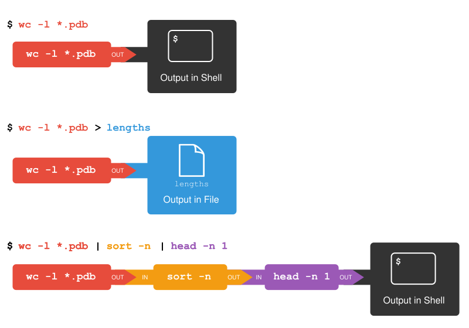

How can I combine existing commands to do new things?
Learning Objectives:
Redirect a command’s output to a file.
Process a file instead of keyboard input using redirection.
Construct command pipelines with two or more stages.
Explain what usually happens if a program or pipeline isn’t given any input to process.
Key Points:
Other useful commands to manipulate text and which are often used together in pipes include:
cat displays the contents of its inputs.
head displays the first 10 lines of its input.
tail displays the last 10 lines of its input.
sort used to order the input lines alphabetically (default) or numerically (-n option).
wc counts lines, words, and characters in its inputs.
cut to extract parts of a file that are separated by a delimiter.
uniq to obtain only unique lines from its input. The -c option can also be used to count how often each of those unique lines occur.
command > file redirects a command’s output to a file (overwriting any existing content).
command >> file appends a command’s output to a file.
< operator redirects input to a command
The | pipe allows to chain several commands together.
first | second is a pipeline: the output of the first command is used as the input to the second.
The best way to use the shell is to use pipes to combine simple single-purpose programs (filters).
2.4.1 A few more basic commands
Let’s go over and perform some basic commands we have already encountered, but this time, we may go deeper and also introduce new commands.
Performing counts with wc
We’ll start with a directory called molecules that contains six files describing some simple organic molecules. The .pdb extension indicates that these files are in Protein Data Bank format, a simple text format that specifies the type and position of each atom in the molecule.
Let’s go into that directory with cd and run the command wc *.pdb. wc is the “word count” command: it counts the number of lines, words, and characters in files (from left to right, in that order).
The * in *.pdb matches zero or more characters, so the shell turns *.pdb into a list of all .pdb files in the current directory:
What happens if a command is supposed to process a file, but we don’t give it a filename? For example, what if we type:
wc-l
but don’t type *.pdb (or anything else) after the command? Since it doesn’t have any filenames, wc assumes it is supposed to process input given at the command prompt, so it just sits there and waits for us to give it some data interactively. From the outside, though, all we see is it sitting there: the command doesn’t appear to do anything.
If you make this kind of mistake, you can escape out of this state by holding down the control key (Ctrl) and typing the letter C once and letting go of the Ctrl key. Ctrl+C
We can also use -w to get only the number of words, or -c to get only the number of characters.
Which of these files contains the fewest lines? It’s an easy question to answer when there are only six files, but what if there were 6000? Our first step toward a solution is to run the command:
wc-l*.pdb > lengths.txt
The greater than symbol, >, tells the shell to redirect the command’s output to a file instead of printing it to the screen. (This is why there is no screen output: everything that wc would have printed has gone into the file lengths.txt instead.) The shell will create the file if it doesn’t exist. If the file exists, it will be silently overwritten, which may lead to data loss and thus requires some caution. ls lengths.txt confirms that the file exists:
ls lengths.txt
lengths.txt
Printing file content to screen with cat
We have already encountered the cat command in our previous lesson. We will go a little deeper here and see how its useful when combining commands.
We can now send the content of lengths.txt to the screen using cat lengths.txt. The cat command gets its name from “concatenate” i.e. join together, and it prints the contents of files one after another. There’s only one file in this case, so cat just shows us what it contains:
We’ll continue to use cat in this lesson, for convenience and consistency, but it has the disadvantage that it always dumps the whole file onto your screen. More useful in practice is the command less, which you use with less lengths.txt. This displays a screenful of the file, and then stops. You can go forward one screenful by pressing the spacebar, or back one by pressing b. Press q to quit.
Sorting with the sort command
Now let’s use the sort command to sort its contents.
What Does sort -n Do?
If we run sort on a file containing the following lines:
10
2
19
22
6
the output is:
10
19
2
22
6
If we run sort -n on the same input, we get this instead:
2
6
10
19
22
Note
The -n option specifies a numerical rather than an alphanumerical sort.
We will also use the -n option to specify that the sort is numerical instead of alphanumerical. This does not change the file; instead, it sends the sorted result to the screen:
We can put the sorted list of lines in another temporary file called sorted-lengths.txt by putting > sorted-lengths.txt after the command, just as we used > lengths.txt to put the output of wc into lengths.txt. Once we’ve done that, we can run another command called head to get the first few lines in sorted-lengths.txt:
Using -n 1 with head tells it that we only want the first line of the file; -n 20 would get the first 20, and so on. Since sorted-lengths.txt contains the lengths of our files ordered from least to greatest, the output of head must be the file with the fewest lines.
Redirecting to the same file >>
It’s a very bad idea to try redirecting the output of a command that operates on a file to the same file. For example:
sort-n lengths.txt > lengths.txt
Doing something like this may give you incorrect results and/or delete the contents of lengths.txt.
What Does >> Mean?
We have seen the use of >, but there is a similar operator >> which works slightly different. We’ll learn about the differences between these two operators by printing some strings. We can use the echo command to print strings e.g.
echo The echo command prints text
The echo command prints text
Now test the commands below to reveal the difference between the two operators:
(Try executing each command twice in a row and then examining the output files)
echo hello > testfile01.txt
and:
echo hello >> testfile02.txt
Note
In the first example with >, the string “hello” is written to testfile01.txt, but the file gets overwritten each time we run the command.
We see from the second example that the >> operator also writes “hello” to a file (in this casetestfile02.txt), but appends the string to the file if it already exists (i.e. when we run it for the second time).
Exercise 2.4.1.1: Appending Data
We have already met the head command, which prints lines from the start of a file. tail is similar, but prints lines from the end of a file instead.
Consider the file bacteria.txt. After these commands, select the answer that corresponds to the file bacteria-subset.txt:
The first three lines and the last two lines of bacteria.txt
The second and third lines of bacteria.txt
Solution:
Option 3 is correct.
For option 1 to be correct we would only run the head command.
For option 2 to be correct we would only run the tail command.
For option 4 to be correct we would have to pipe the output of head into tail -n 2 by doing head -n 3 bacteria.txt | tail -n 2 > bacteria-subset.txt
If you think this is confusing, that’s fine: even once you understand what wc, sort, and head do, all those intermediate files make it hard to follow what’s going on.
Now that we know a few basic commands, we can finally look at the shell’s most powerful feature: the ease with which it lets us combine existing programs in new ways.
2.4.2 The | Pipe
The way we can combine commands together is using a pipe, which uses the special operator |.
From our previous exercise, we can make it easier to understand by running sort and head together:
sort-n lengths.txt |head-n 1
9 methane.pdb
The vertical bar, |, between the two commands is called a pipe. It tells the shell that we want to use the output of the command on the left as the input to the command on the right.
Nothing prevents us from chaining pipes consecutively. That is, we can for example send the output of wc directly to sort, and then the resulting output to head. Thus we first use a pipe to send the output of wc to sort:
And now we send the output of this pipe, through another pipe, to head, so that the full pipeline becomes:
wc-l*.pdb |sort-n|head-n 1
9 methane.pdb
This is exactly like a mathematician nesting functions like log(3x) and saying “the log of three times x”. In our case, the calculation is “head of sort of line count of *.pdb”.
The redirection and pipes used in the last few commands are illustrated below:

Redirects and Pipes
Exercise 2.4.2.1: Piping Commands Together
In our current directory, we want to find the 3 files which have the least number of lines. Which command listed below would work?
wc -l * > sort -n > head -n 3
wc -l * | sort -n | head -n 1-3
wc -l * | head -n 3 | sort -n
wc -l * | sort -n | head -n 3
Solution:
Option 4 is the solution. The pipe character | is used to connect the output from one command to the input of another. > is used to redirect standard output to a file. Try it in the molecules/ directory!
Exercise 2.4.2.2: An example pipeline: Checking Files
There are 17 files from an assay in the ~/Desktop/workshop_files_Bact_Genomics_2023/02_unix_intro/north-pacific-gyre/2012-07-03 directory. Suppose you want to do some quick sanity checks on the content of the files. You know that the files are supposed to have 300 lines. Starting by moving to that directory,
How would you check if there are any files with fewer than 300 lines in the directory?
How would you check if there are any files with more than 300 lines in the directory?
Solution:
wc -l *.txt | sort -n | head -n 5. You can report the number of lines of all the text files in the directory, sort them, and then get the top (if any files have fewer than 300 lines they will appear here).
wc -l *.txt | sort -n -r | head -n 5. Same as above but now we want to sort the files in reverse order.
This idea of linking programs together is why Unix has been so successful. Instead of creating enormous programs that try to do many different things, Unix programmers focus on creating lots of simple tools that each do one job well, and that work well with each other. This programming model is called “pipes and filters”.
We’ve already seen pipes; a filter is a program like wc or sort that transforms a stream of input into a stream of output. Almost all of the standard Unix tools can work this way: unless told to do otherwise, they read from standard input, do something with what they’ve read, and write to standard output.
The key is that any program that reads lines of text from standard input and writes lines of text to standard output can be combined with every other program that behaves this way as well. You can and should write your programs this way so that you and other people can put those programs into pipes to multiply their power.
Exercise 2.4.2.3: Pipe Reading Comprehension
A file called bacteria.txt (in the 02_unix_intro folder) contains the following data:
Hint: build the pipeline up one command at a time to test your understanding
Solution:
The head command extracts the first 5 lines from bacteria.txt. Then, the last 3 lines are extracted from the previous 5 by using the tail command. With the sort -r command those 3 lines are sorted in reverse order and finally, the output is redirected to a file final.txt. The content of this file can be checked by executing cat final.txt. The file should contain the following lines:
For the file bacteria.txt from the previous exercise, consider the following command:
cut-d , -f 2 bacteria.txt
The cut command is used to remove or “cut out” certain sections of each line in the file. The optional -d flag is used to define the delimiter. A delimiter is a character that is used to separate each line of text into columns. The default delimiter is Tab, meaning that the cut command will automatically assume that values in different columns will be separated by a tab. The -f flag is used to specify the field (column) to cut out. The command above uses the -d option to split each line by comma, and the -f option to print the second field in each line, to give the following output:
The uniq command filters out adjacent matching lines in a file. How could you extend this pipeline (using uniq and another command) to find out what bacteria the file contains (without any duplicates in their names)?
Solution:
cut-d , -f 2 bacteria.txt |sort|uniq
Awk: a more powerful tool for text processing
We have seen the cut command that allows the selection of columns in tabular data. If you need more powerful manipulation of tabular data you can use the command awk, which permits more powerful operations (selection, calculations etc.) on columns. For more complex operations, however, we recommend going to your favourite programming language!
Exercise 2.4.2.5: Which Pipe?
The file bacteria.txt contains 9 lines of data formatted as follows:
The uniq command has a -c option which gives a count of the number of times a line occurs in its input. Assuming your current directory is 02_unix_intro/, what command would you use to produce a table that shows the total count of each type of animal in the file?
Option 4. is the correct answer. If you have difficulty understanding why, try running the commands, or sub-sections of the pipelines (make sure you are in the 02_unix_intro/ directory).
Exercise 2.4.2.6: Filtering by patterns
grep is another command that searches for patterns in text. Patterns could be simple text or a combination of text and the wildcard characters we have seen before like ? and *. Like > other commands we have seen grep can be used on multiple files. For example if we wanted to find all occurrences of name in all the text files we could write:
grep"name"*.txt
Using the bacteria.txt file suppose we wanted to copy all the Escherichia_coli dates to a separate file Escherichia_coli.txt. Which combination of commands would achieve this?
cat bacteria*.txt would combine the content of both files, and then
head -n 6 would print the first six lines of the combined file, and then
tail -n 1 would return the last line of this output.
Exercise 2.4.3.2:zcat and grep
In the 02_unix_intro/ directory, you will find a file named MTB_H37Rv_selected_proteins.fasta.gz. This is a file that contains the amino acid sequences of some proteins from Mycobacterium tuberculosis in a text-based format known as FASTA. However, this file is compressed using an algorithm known as GZip, which is indicated by the file extension .gz.
To look inside compressed files, you can use an alternative to cat called zcat (the ‘z’ at the beginning indicates it will work on zipped files).
Use zcat together with less to look inside this file.
Hint
Remember you can press Q to exit the less program.
The content of this file may look a little strange, if you’re not familiar with the FASTA file format. But basically, each protein sequence name starts with the > symbol. Combine zcat with grep to extract the sequence names only. How many proteins are in the file?
Solution:
Task 1
The following command allows us to “browse” through the content of this file:
zcat MTB_H37Rv_selected_proteins.fasta.gz |less
NB. Mac users may have to use this version of the command zcat < TB_H37Rv_selected_proteins.fasta.gz | less to read compressed files by directing the file to zcat with <.
We can use ↑ and ↓ to move line-by-line or the Page Up and Page Down keys to move page-by-page. You can exit less by pressing Q (for “quit”). This will bring you back to the console.
Let’s now explore a few more useful commands to manipulate text that can be combined to quickly answer useful questions about data we may generate later on in this course.
Let’s start with the command cut, which is used to extract sections from each line of its input. For example, let’s say we wanted to retrieve only the second field (or column) of our CSV files in the 02_unix_intro directory, which contains the species classification taxonomy_id of reads obtained from sequencing the sample `TBNmA041:
-d defines the delimiter used to separate different parts of the line. Because this is a CSV file, we use the comma as our delimiter. The tab is used as the default delimiter.
-f defines the field or part of the line we want to extract. In our case, we want the second field (or column) of our CSV file. It’s worth knowing that you can specify more than one field, so for example if you had a CSV file with more columns and wanted columns 3 and 7 you could set -d 3,7.
The next command we will explore is called sort, which sorts the lines of its input alphabetically (default) or numerically (if using the -n option). Let’s combine it with our previous command to see the result:
Remember we have to add the sort option -n to achieve the required output.
You can see that the output is now sorted as desired.
The cut command is often used in conjunction with another command: uniq. This command returns the unique lines in its input. Importantly, it only works as intended if the input is sorted. That’s why it’s often used together with sort.
Let’s see it in action, by continuing building our command:
We can see that now the output is de-duplicated, so only unique values are returned. And so, with a few simple commands, we’ve answered a very useful question from our data: what are the unique species in our collection of samples?
Illustration of the sort + uniq commands by Julia Evans
Exercise 2.4.3.3: Sort & Count I
Let’s continue working on our command:
cat TBNmA041*.csv |cut-d","-f 2 |sort-n|uniq
As you saw, this output also returns a line called “taxonomy_id”. This was part of the header (or column name) of our CSV file, which is not really useful to have in our output.
Let’s try and solve that problem, and also ask the question of how frequent each of these species are in our data.
Looking at the help page for grep (grep --help or man grep), see if you can find an option to invert a match, i.e. to return the lines that do not match a pattern. Can you think of how to include this in our pipeline to remove that line from our output?
Hint
The option to invert a match with grep is -v. grep -v "taxonomy_id" would return the lines that do not match the word “taxonomy_id”.
The uniq command has an option called -c. Try adding that option to the command and infer what it does (or look at uniq --help).
Finally, produce a sorted table of counts for each of our taxonomic id in descending order (the most common species at the top).
Hint
The sort command has an option to order the output in reverse order: -r.
Solution:
Task 1
Looking at the help of this function with grep --help, we can find the following option:
-v, --invert-match select non-matching lines
So, we can continue working on our pipeline by adding another step at the end:
We used the option -r, which from the help page sort --help, says:
-r, --reverse reverse the result of comparisons
Exercise 2.4.3.4: Sort & Count II
This is an (optional) advanced exercise.
In the 02_unix_intro/ directory, you will find two files named G26832.gff3.gz and G26832.tsv. We have already encountered these type of files and hopefully are familiar with its contents. The .gff is a file containing the locations and other information of genes in the Mycobacterium tuberculosis genome in a standard text-based format called GFF.
This is a tab-delimited file, where the 3rd column contains information about the kind of annotated feature, the 4th and 5th columns contains the start and end positions on the contig and the 7th column contains the strand information. You can investigate its content with zcat G26832.gff3.gz | less -S. We use zcat because the file is compressed (we can tell from its extension ending with .gz)
Extracts from this file have been converted to a more friendly file format .tsv. The .tsv file also contain similar information but this time, with the gene names spelt out distinctly in column 7. The .tsv file can easily be open using excel or libre office. For the tasks below, you may want to use the .tsv file to carry out the analysis.
Using a combination of the commands we have seen so far:
Count how many occurrences of each feature (2nd column in .tsv) there is in the file.
How many times does the gene “menH” occur in the genomic?
Which gene has the highest number of occurrences in the genome?
How many distinct trna’s can you identify in the bacteria genome?
Which of these occurs more than once in the genome?
Do you see any unusual trna? What do you think their roles are?
Hint
Start by investigating the content of the file with cat G26832.tsv | head or open with a GUI tool. You will notice the first few lines of the file contain comments starting with # symbol. You should remove these lines before continuing.
Check the help for grep to remind yourself what the option is to return lines not matching a pattern.
Remember that the cut program uses tab as its default delimiter.
We use grep to remove the first few lines of the file that start with # character.
We use cut to extract the third “field” (column) of the file. Because it’s a tab-delimited file, we don’t need to specify a delimiter with cut, as that is the default.
We use sort to order the features in alphabetical order.
Finally, uniq is used to return the unique values as well as count their occurrence (with the -c option).
Task 2
The answer is 14. We could use the following command by investigating column 7:
cat G26832.tsv |grep"menH"|cut-f 7 |wc-l
Task 3
The gene with the highest occurrence in the genome is acrR and it occurs 38 times.
Task 4b For task 4b, we can identify the trna’s that occur more than once in the genome by simply adding another sort to the previous command instead of the wc -l.
There are 11 trna's that occur more than once in the genome.
Task 4c fMet_trna and Ile2_trna may be unusual to you. Google and find out what they do.
sort: Alphabetically or Numerically?
Note that, by default the sort command will order input lines alphabetically. So, for example, if it received this as input:
10
2
1
20
The result of sorting would be:
1
10
2
20
Because that’s the alphabetical order of those characters. We can use the option sort -n to make sure it sorts these as numbers, in which case the output would be as expected:
1
2
10
20
But, you may be asking yourself: why did it work with the output of uniq without specifying -n?
This is because the output of uniq left-aligns all the numbers by prefixing the smaller numbers with a space, such as this:
10
2
1
20
And because the space character comes first in the computer’s “alphabet”, we don’t actually need to use the -n option.
Here’s the main message: always use the -n option if you want things that look like numbers to be sorted numerically (if the input doesn’t look like a number, then sort will just order them alphabetically instead).
2.4.4 Credit
Information on this page has been adapted and modified from the following source(s):
Gabriel A. Devenyi (Ed.), Gerard Capes (Ed.), Colin Morris (Ed.), Will Pitchers (Ed.),Greg Wilson, Gerard Capes, Gabriel A. Devenyi, Christina Koch, Raniere Silva, Ashwin Srinath, … Vikram Chhatre. (2019, July). swcarpentry/shell-novice: Software Carpentry: the UNIX shell, June 2019 (Version v2019.06.1).